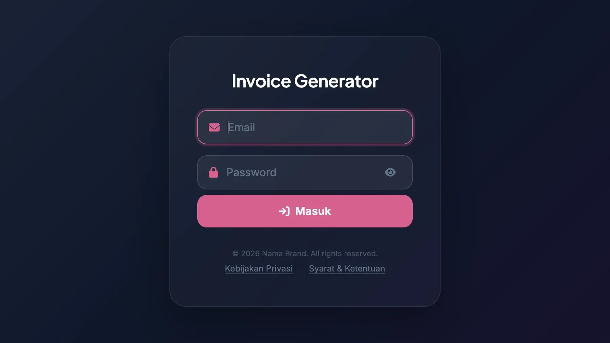
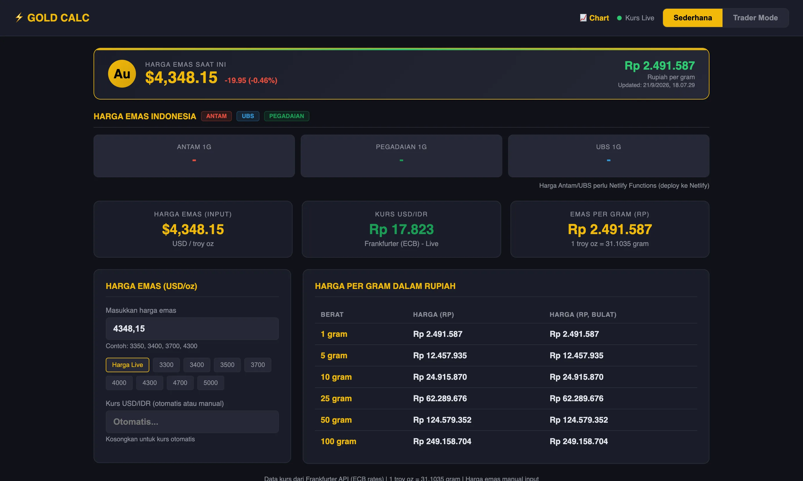
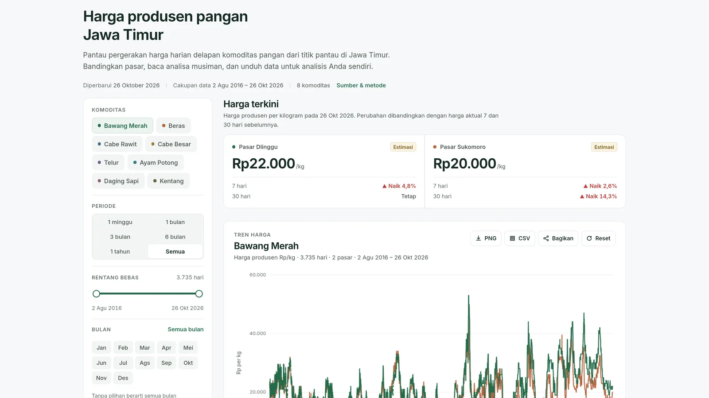
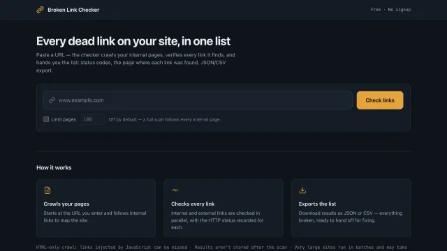

WordPress
An academic publishing platform on Qur'anic studies, six years in production on WordPress. Built to be editable by its authors long after handover.
00 Observatory / East Java
WordPress Developer · AI Product Builder
Scroll to observe
01 Projects
An academic publishing platform on Qur'anic studies, six years in production on WordPress. Built to be editable by its authors long after handover.

A private invoice workspace for makeup artists and small service businesses: build invoices, send them on WhatsApp, export PDFs, track payments, and keep a synced backup.

A gold price calculator that turns USD per troy ounce into rupiah per gram, with entry, target, and stop-loss levels.

A free dashboard that turns East Java producer price data into a seasonal view farmers can plan around.

Self-hosted crawler that finds broken links on a site and exports them as CSV/JSON.
Builds, plugin and theme setup, updates, backups, and small fixes for sites that need to ship or stay healthy.
Checkout, product, cart, cache, and plugin-conflict work when a live store is slow or something is not behaving.
Plain HTML, CSS, and JavaScript, Firebase, or WordPress when that is the right base for an internal tool or MVP.
A focused pass over performance, broken links, basic SEO, and WooCommerce health before a rebuild or campaign.
02 About
I'm a WordPress developer at Fanaloka, based in East Java, Indonesia. I build and maintain WordPress sites, and in my own time I build small products with AI.
Most of those products start from problems I see around me: agriculture, small businesses, food prices. Food Prices came from one of them. It is a free dashboard that helps farmers in East Java plan planting and selling around price trends. I keep the stack plain: HTML, CSS, and JavaScript wherever possible.
WordPress Developer
Fanaloka · Bali, Indonesia
WordPress Developer
Brave Factor · Bali, Indonesia
03 Contact
I'm open to freelance work and collaboration, especially WordPress, WooCommerce performance, dashboards, and small AI products. For a first note, send the site or problem, the timeline, and a rough budget range. I'll reply with scope and estimate.